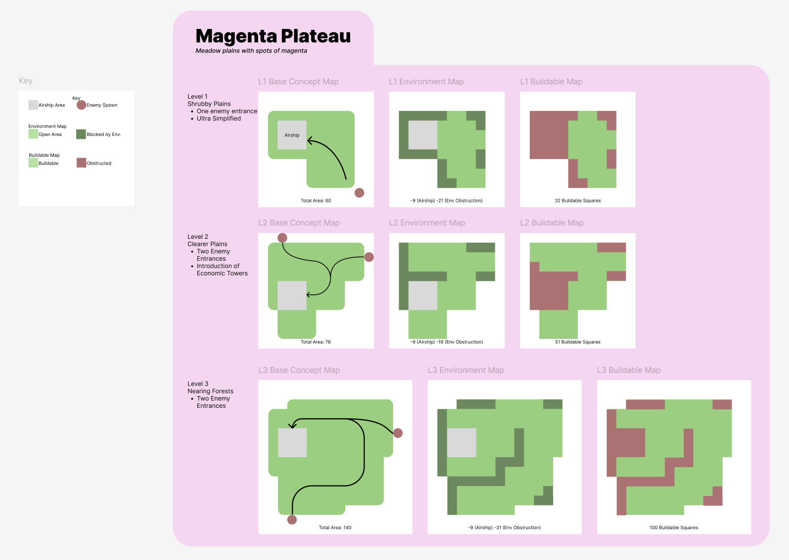
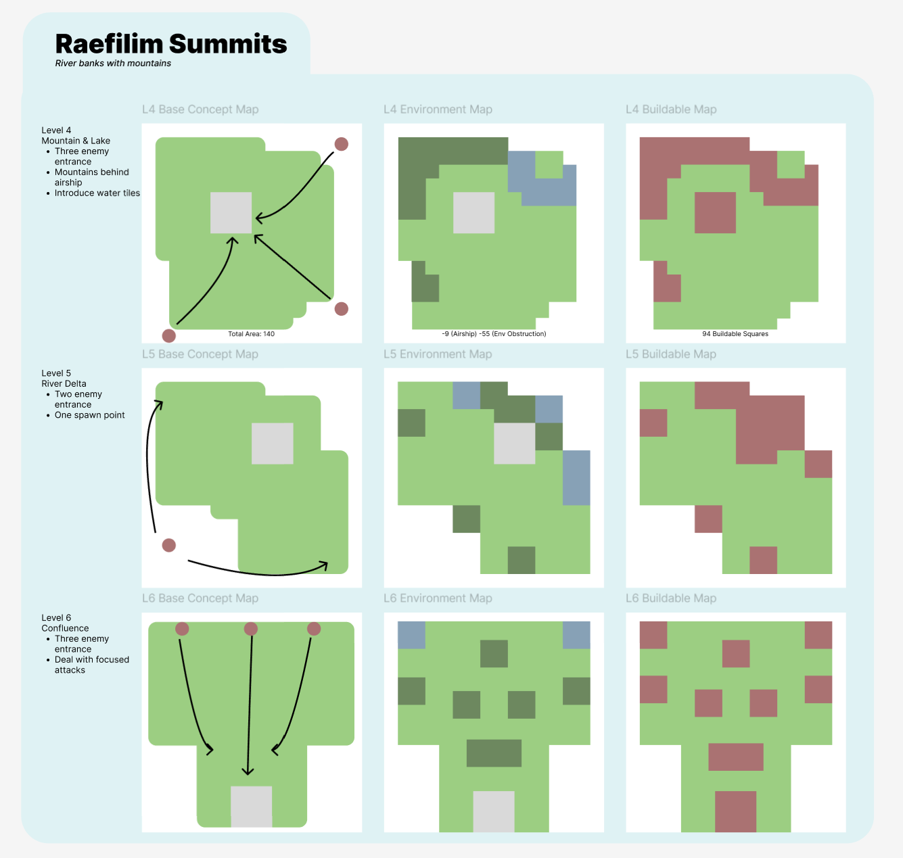
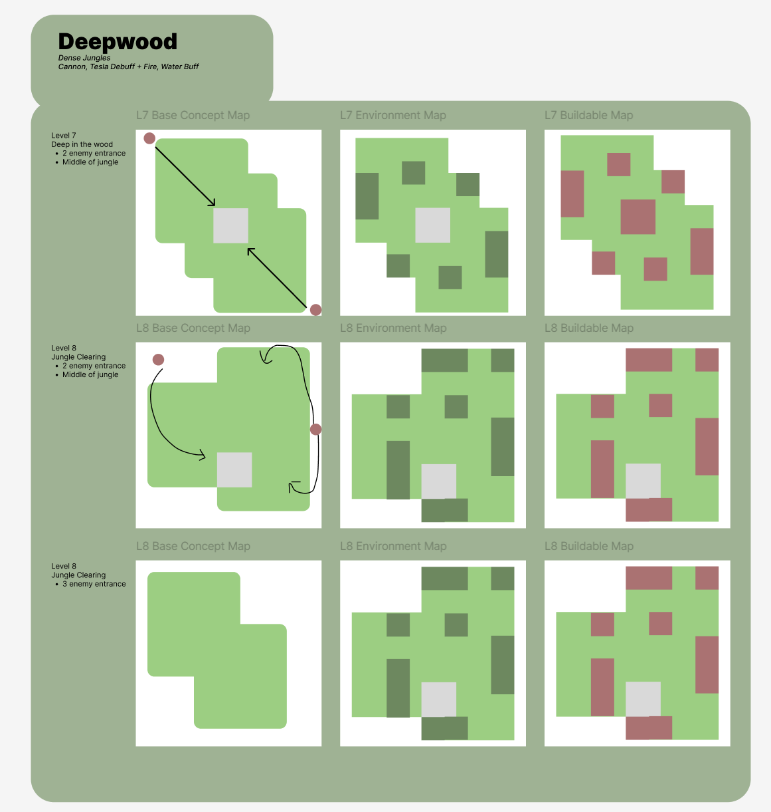
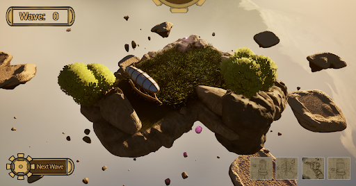

In the height of the steam age, humanity conquered all. When the world was claimed in its entirety, many looked to find the next great frontier: the skies. But when the settlers arrived, something else was already there.
Squatter’s Rights to Heaven is a strategy tower defense game where players defend humanity's settlements in the skies from monstrous beasts. Players must use the technologies of the golden age of steam, placing down unique towers in limited space, and synergizing weapons to find novel combat abilities.
As a Designer on this project, my primary responsibility involves conceptualizing and structuring the game's levels before they are implemented in the engine. Because space and placement are the core mechanics of our game, every map requires precise balancing.
I establish the Level Design Pipeline by creating comprehensive 2D top-down blueprints for each stage. I break down each level into three distinct layers:
These detailed schematic documents are then handed over to the Map Editors to serve as the foundational blueprint for their in-engine setup, ensuring the strategic intent and difficulty pacing remain consistent throughout production.
Below are the completed design documents for three different biomes/zones in the game. As players progress through these zones, I gradually increased the complexity by introducing multiple enemy entrances, terrain hazards, and more constrained buildable areas to challenge their spatial planning.

Fig 1: "Magenta Plateau" zone design. Evolving from a simple single-entrance layout to introducing economic towers and dual enemy paths.

Fig 2: Advanced zone design layout. Notice the increased environmental obstructions reducing the available grid spaces, forcing players to optimize their tower synergies.

Fig 3: Complex zone design showcasing multi-directional enemy pathing and highly fragmented buildable areas for late-game challenges.
Here is a look at the in-engine implementation, showing how the top-down map designs translate into the actual tower defense experience.

Fig 4: In-game screenshot showcasing the tower defense gameplay and environment.
Beyond level design, I also took on the role of UI Programmer for the project. I was responsible for translating UI wireframes into functional, interactive elements within the game engine, handling the logic for menu navigation, scene transitions, and user inputs.
Below is an early development showcase of the Main Menu system I implemented, demonstrating the visual style, button logic, and smooth state transitions before integrating into the core gameplay loop.
Fig 5: Early work-in-progress showcase of the Main Menu logic and UI flow.